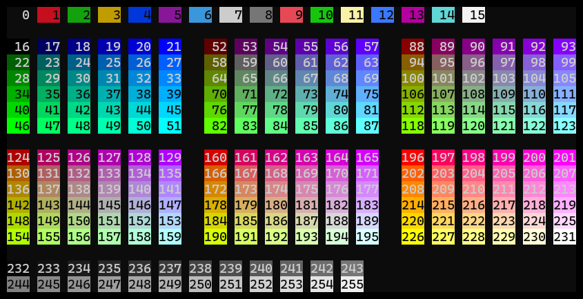

Projects
Projects are the main way of structuring time tracking. Each time tracking record is associated to a project. For more high-level structuring, there are also Workspaces.
Project properties
A project has the following properties, as specified in it's YAML file:
name: MyProject
parent: ParentProject
requiredTags: []
color: 0
fgColor: 15
symbol: M
archived: false
Creating projects
Most simple, a project with default properties can be created like this:
track create project MyProject
To create a project with certain properties, use flags:
track create project MyProject --color 28 --symbol M
To list all available flags, see
track create project --help
For color values, see section Colors.
Nested projects
As the examples already showed, a project can have a parent project. This way, hierarchies of projects with any depth of nesting can be created.
track create project Private
track create project Coding --parent Private
track create project MyApp --parent Coding
To view the project hierarchy, use:
track list projects
Gives:
<default>
└─Private P
└─Coding C
└─MyApp M
For further ways to structure time tracking, see Tags and Workspaces.
Colors
For each project, a foreground and background color can be defined (fgColor, color).
Track uses 256 indexed terminal colors. To view the available colors, run:
track list colors
Which shows something like this:
 Available colors with indices
Required tags
In requiredTags, projects can define a list of tags that must be given for any record, with a value.
This feature can be used to enforce another layer or dimension of categorization, beyond projects.
E.g., Track projects could represent real-world projects, while a required tag holds information about the type of activity.
Here, a tag activity could be used with values like writing, coding, meeting etc.
Editing projects
Project properties (except the project's name) can be changed at any time by editing the YAML file. It is highly recommended to use Track for editing rather than to open the file directly:
track edit project MyProject
This way, the resulting project definition is checked before overwriting the project file.
For details, see chapter Manipulating data.